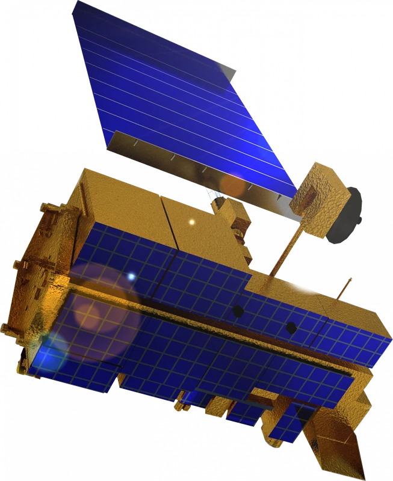
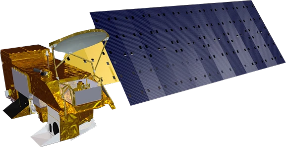
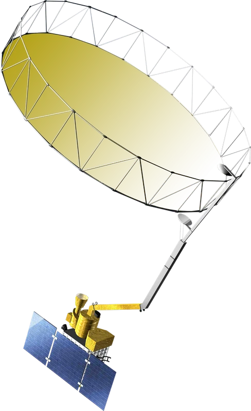
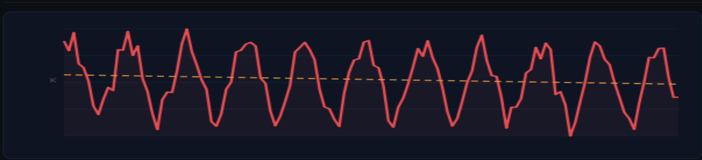
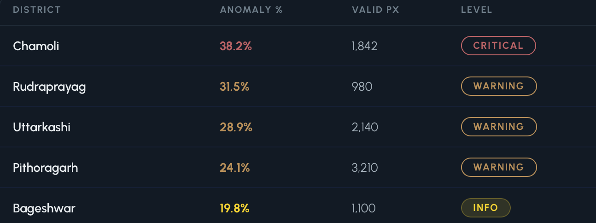
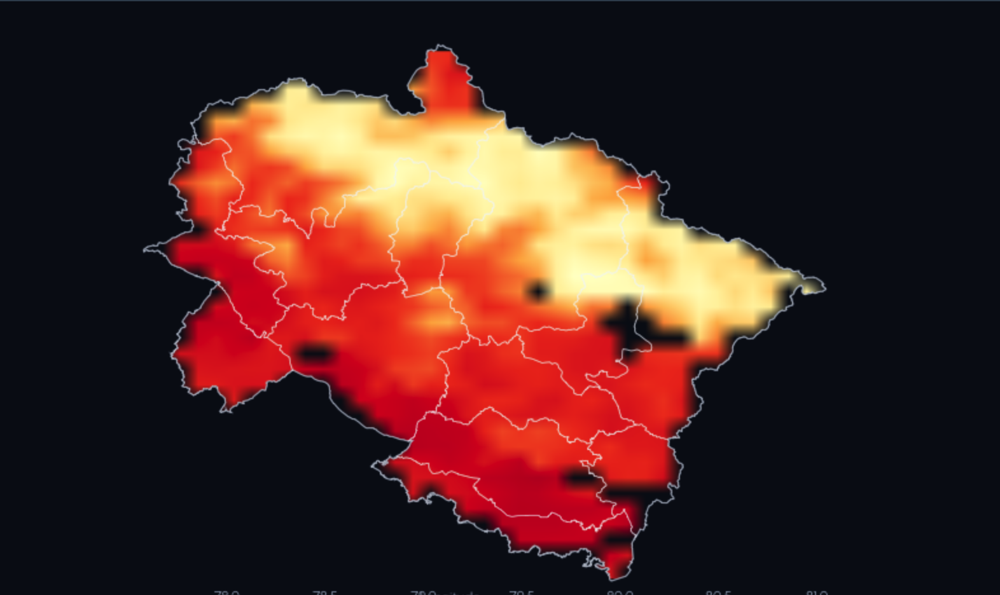
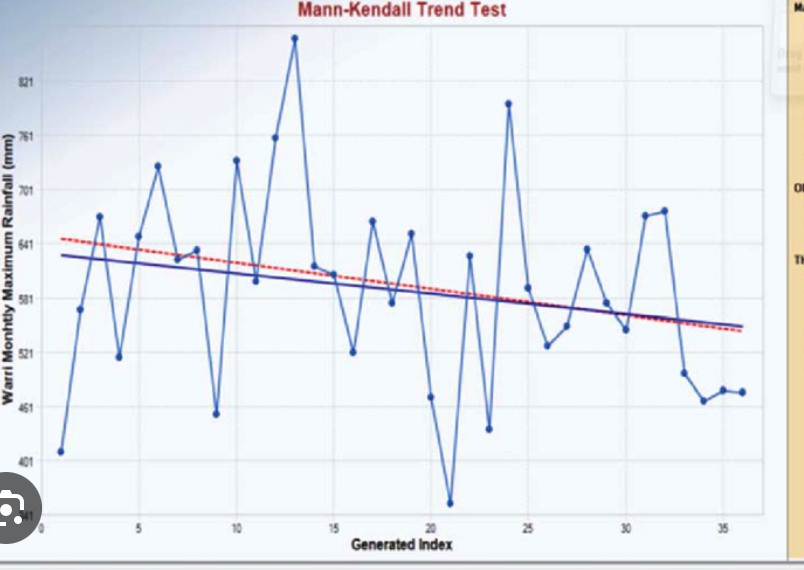
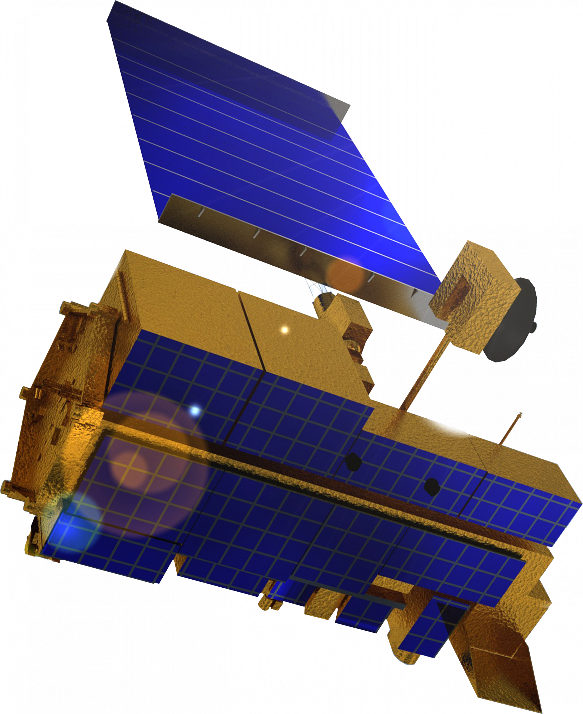
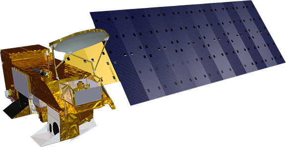
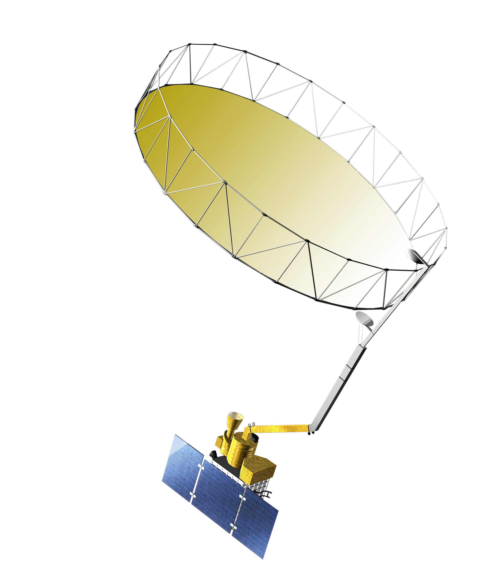

Understand a changing
Earth, at local scale.
Satellite observations, climate trends and early warnings for Uttarakhand — brought together in one decision-ready platform.

TERRA
AQUA
SMAP79° 02′ E
Current satellite positions are propagated from the latest orbital elements. Pass times use a 10° minimum elevation.

Temperature & Greenness Shifts
Land surface temperature is declining at −0.173 K/year. Vegetation greenness is increasing at +0.00314/year. Both statistically significant after FDR correction.

District-Level Anomaly Mapping
Pixel-level choropleth maps across all 13 Uttarakhand districts. August 2025 precipitation anomalies mapped with Isolation Forest + robust Z-score detection (threshold |Z|>3.5).

Quantified Rates & Confidence Bounds
Sen's slope estimates per variable with 95% bootstrap confidence intervals. OLS regression for linear component. Annualized rates computed from 126 monthly measurements.

Statistical Validation & FDR Correction
Autocorrelation-adjusted Mann–Kendall test with Benjamini–Hochberg FDR correction applied across all satellite variables. This example illustrates the methodology.
Adaptive Variable Selection
Two-pass greedy scoring on coverage, variability, Mann-Kendall |τ|, and objective weights — with redundancy penalty. No p-value selection bias.
Coverage · Variability · MK τ · Redundancy PenaltyMulti-Scale Trend Intelligence
OLS · Mann-Kendall · Modified MK (autocorr-adjusted) · Sen's Slope · CUSUM change-points · FDR correction — all running in parallel.
OLS · MK · Sen's Slope · CUSUM · FDRUncertainty-Guided Interaction Graph
Spearman pairs at lags 0–6 months, FDR-corrected, composite confidence indicator. Partial correlations flag spurious edges from confounders.
Spearman · Lag 0–6 · FDR · Partial CorrelationEvidence-Grounded AI Reasoning
14 strict rules. Actual statistical outputs JSON-serialized into every prompt. AI explains; statistical engines establish facts. Zero hallucination tolerance.
14 Rules · JSON Grounding · Zero HallucinationSatellite Variable Trend Summary
MANN-KENDALL · FDR-CORRECTED · 126 MONTHS| Variable | Trend Direction | Annual Rate | MK τ | FDR p-value | Significance |
|---|---|---|---|---|---|
|
Land Surface Temperature LST · MODIS Terra/Aqua |
↓ Decreasing | −0.173 K/yr | −0.182 | 0.003 | ✓ Significant |
|
Vegetation Index NDVI · MODIS Terra/Aqua |
↑ Increasing | +0.00314/yr | +0.411 | 1.5×10⁻⁶ | ✓ Significant |
|
Soil Moisture AM SMAP · Morning pass |
→ No trend | — | — | > 0.05 | ⚬ Not significant |
|
Soil Moisture PM SMAP · Evening pass |
→ No trend | — | — | > 0.05 | ⚬ Not significant |
|
Precipitation GPM · Microwave radar |
→ No trend | — | — | > 0.05 | ⚬ Not significant |


Land surface temperature (Kelvin) and vegetation index (0–1) at 1 km resolution. Two daily overpasses for cross-validation.

Soil moisture m³/m³ at 36 km resolution. Morning and evening passes capture diurnal variation in surface wetness.
Monthly total rainfall (mm) from Global Precipitation Measurement microwave radar and passive radiometer network.
Earth Observation
Explore NASA satellite observations across Uttarakhand. Each variable rendered on a geographic map from the native equal-area grid. District boundaries overlaid for spatial context.
A global day/night and terrain view for geographic context. This basemap is separate from the analyzed 2015–2025 NASA satellite measurements below.
—
Satellite Imagery — Land Surface Temperature
2015-04 · Strict quality · EPSG:6933 → WGS84Native equal-area satellite pixels reprojected to latitude and longitude; district boundaries are outlined for context.
Regional Mean Over Time
Average across valid pixels— months in playback · gold marker = selected month
Is graph mein kya dikh raha hai?
SELECTED SATELLITE SIGNAL · SIMPLE HINGLISH EXPLANATION
Bright line aur gold dot ko aasaan shabdon mein samjho.
Temporal History
10-year regional monthly time seriesObservation Validity Map
Valid vs. missing pixels inside UttarakhandThis map shows where satellite readings are available, not how hot, wet, or unusual those readings are. Each colored cell represents one satellite grid cell within Uttarakhand. Teal means a valid reading is available; red means a reading is missing for this month, variable, and quality filter. Areas outside the Uttarakhand outline are left blank and excluded from counts.
Monthly Data Coverage
Valid satellite pixels inside Uttarakhand · 50% minimum guideCoverage at or above 50% is marked consistent; below 50% is inconsistent. This checks data availability only, not whether the readings themselves are consistent.
Quality Comparison — Strict vs Relaxed
Same month, same variable, different quality filtersPixel Value Distribution
Trend Detective
Track how satellite measurements change over time, compare unusual months, and see how patterns differ across Uttarakhand.
Five signal overview
Regional trend direction · adjusted for multiple tests · select a signal to inspectHow unusual a month is compared with the usual value for that same month of the year.
How two signals move together. It shows association, not that one caused the other.
A multiple-test check that reduces false alarms when many signals or districts are tested.
Observed signal over time
Faint line: monthly readings · bright line: smoothed pattern
Signals moving together?
Is chart ko padhne ka tarika: har row ek environmental signal hai aur har box ek month. Har month ko usi calendar month ke usual level se compare kiya gaya hai. Rang ki intensity similar aur halki rahe, toh signal apne usual pattern ke aas-paas consistent hai—koi badi anomaly nahi. Tez laal rang usual se zyada aur tez neela rang usual se kam value dikhata hai; rang jitna tez, deviation utna zyada. Grey ka matlab data missing hai.
Where is it changing?
District averages from the same satellite grid cellsMap proportions follow the district geography. Hover over a district for its direction, Sen slope, adjusted q-value and valid-month count. Red/blue show increasing/decreasing trends that pass q < 0.05 after FDR correction across 65 district-variable tests; grey means the adjusted evidence did not pass this threshold or data coverage was insufficient. District tests are seasonally adjusted; averages are not ground-station measurements.
District comparison
District seasonal profile
How to read this analysis
Technical details, thresholds, and limitations
Regional strict-quality cards: direction, Sen rate, autocorrelation-adjusted Modified Mann–Kendall result, and FDR q-value come from the same precomputed project report used by Streamlit. This keeps the regional findings consistent between the two interfaces.
Relaxed-quality regional results and district results: these are calculated from the selected monthly grid cells in the browser. District trends first subtract each calendar month's usual average. FDR correction is applied across 65 district-variable tests.
Trend evidence: Modified Mann–Kendall adjusts for lag-1 autocorrelation. Benjamini–Hochberg FDR correction accounts for testing multiple signals. q < 0.05 is the displayed threshold; it is evidence against a no-trend null, not a guarantee or causal explanation.
OLS slope: ordinary least squares fits a straight line through monthly means. Sen slope: the median of pairwise slopes, which is less sensitive to extreme observations. The 12-month mean smooths seasonal variation. A partial year at either end has fewer observations.
Limitations: satellite trends show patterns, not causes; they are not ground measurements or official event reports. The relaxed-quality result is a separate sensitivity calculation and may differ from the official strict-quality summary.
Anomaly Intelligence
Explore when satellite signals crossed hazard thresholds, which Uttarakhand districts showed pixel-level exposure, and how the risk ranking was formed.
Hazard overview
How often each multi-sensor signal pattern was detectedMonths triggered by hazard
Per-hazard district intelligence
Select a hazard to inspect exposure and intensity in every district📌 Legacy single-sensor view — GPM August 2025 district analysis
Original precipitation-only district summary. This is separate from the six-hazard monthly detector above.
📚 Methodology — multi-hazard and per-district analysis
Two levels of anomaly detection
Regional monthly alerts: standardize the five NASA sensor series, assign INFO / WARNING / CRITICAL tiers, then apply the six signal-combination rules. The hazard screen uses a lower combination threshold than the alert tier.
Per-hazard district exposure: for each hazard’s active regional months, group pixel anomaly events by district. The page reports months with pixel events, sensor intensity, and the worst month.
Hazard triggers
Per-hazard district risk score
score = 0.5 × exposure frequency + 0.5 × normalized mean intensity, with hazard-specific elevation weights for cold stress, heat, flood and vegetation loss. Scores are stretched to the observed 0–100 range when districts differ.
Regional triggers describe a pattern in monthly satellite data. They do not confirm damage, establish a physical cause, or substitute for official warnings. Monthly composites can miss short events such as a sub-daily glacial lake outburst flood.
Interaction Network
Explore how satellite variables move together across Uttarakhand, and whether one signal tends to precede another. Associations describe patterns; they do not prove causation.
Interaction filters
Lag 0 pairs signals from the same month. Lag N pairs variable X at month t with variable Y at month t + N.
Variable relationship graph
Edge width = |ρ| · Green = positive · Red = negative · Arrows show lag directionNo relationships match these filters. Lower the strength threshold or show all relationships.
Graph ko kaise padhein
CONNECTIONS KA SEEDHA MATLAB
Har circle ek satellite signal hai. Line jitni moti, signals ke beech sambandh utna mazboot. Hara matlab dono aksar ek hi direction mein badalte hain; laal matlab opposite directions mein.
Teer time lag dikhata hai: kaunsa signal pehle aur kaunsa baad mein aaya. Lag 0 ka matlab dono same month ke hain. Halki line FDR correction ke baad statistically significant nahi hai.
Yeh historical sambandh hain—yeh nahi batate ki ek signal doosre ka kaaran hai ya future mein kya hoga.
Correlation matrix
Spearman rank correlation for the selected lag and filtersEmpty cells mean the selected filters removed that pair. The diagonal is 1.00 by definition.
Relationship explorer
Sorted by absolute Spearman ρ| Variable X | Lag | Variable Y | Spearman ρ | p-value | FDR q-value | Data points | Significance |
|---|
Strongest filtered relationship
Updates with the filters aboveDoes a Haldwani signal show up nearby?
Choose what is changing around Haldwani, then compare the satellite reading near Rudrapur or Ramnagar in the same month or up to two months later.
How to read it: “σ from usual” tells how unusual a month is compared with that place’s typical value for the same calendar month. The historical ρ shows whether the two local signals tended to move together across the record.
In results ka kya matlab hai?
Chune hue month aur purane pattern ko seedhe shabdon mein samjho.
Does the pattern repeat?
Where are the comparison areas?
Scientific methodology and limitations
Spearman rank correlation measures monotonic association without assuming a linear relationship or normally distributed values.
Lagged analysis pairs X at month t with Y at month t + lag. A lag is a temporal association, not proof that X physically caused Y.
False Discovery Rate uses Benjamini–Hochberg correction to account for testing multiple variable pairs.
Positive ρ means the variables tend to move in the same direction; negative ρ means they tend to move in opposite directions. Larger |ρ| indicates a stronger monotonic association.
Limitations: correlations can reflect shared seasonal cycles or confounding factors; significance does not establish environmental impact or causality.
Predictive Intelligence
Explore what the 2015–2025 Uttarakhand satellite record suggests next, how uncertain those estimates are, and which environmental signals tend to lead one another.
First modelled month — headline numbers
Point estimate ± 95% prediction intervalForecast with uncertainty bands
Observed · model fit · 80% and 95% intervalsFull forecast table
POINT ESTIMATE AND PREDICTION INTERVALS
Drought risk score — next season
Composite index, 0 = lower signal · 100 = stronger drought-like signalLagged Earth-system links — what can lead what?
Multivariable monthly VAR · exploratory Granger screenChoose a signal departure next month and compare the target response with a no-change baseline. Lead links are predictive associations, not proof of physical cause; monthly data cannot resolve week-scale delays.
AI scenario explanation
LLAMA · AUTO-GENERATED FROM YOUR CURRENT SETTINGS
The what-if lines have no separate uncertainty band. Use the independent forecast intervals above to understand forecast uncertainty.
Which signals statistically lead others?
Uttarakhand district climate watch
Forecast-led monitoring priority · not an official warningA shared regional forecast setup is paired with each district’s historical satellite-anomaly exposure. Separate district models are shown by satellite category where at least 60 valid months are available.
Monitoring priority by district
District watch ranking
Inspect the components behind a monitoring-priority score.
District forecast ranking
Why this district ranks first
LLAMA · AUTO-GENERATED FOR THE SELECTED SIGNAL AND MONTH
Pixel hotspots — where anomalies cluster
Historical satellite grid cells · DBSCAN neighbourhood clusteringExplore a single month or recurring locations. Clusters represent unusual satellite measurements, not confirmed damage or predicted hazards.
Map markers show clustered native grid cells. Isolated points are excluded as noise. The district label is the cluster centre, and a footprint can cross district boundaries.
All variables — forecast trajectories
Recent observations and the selected model horizonModel skill certificate
12-fold walk-forward validation · expanding windowThe table compares the AR-Fourier Ridge model with a same-month-last-year seasonal baseline. Interval coverage is estimated out of sample and may differ from the 80% / 95% targets.
Forecast interpretation
Decision-ready summary generated from the displayed model outputs🔬 Methodology — forecasts, lag links and uncertainty
Forecast architecture
Seasonal autoregressive Ridge regression uses lags 1, 2, 3, 6 and 12, three Fourier harmonics for within-year seasonality, and a continuing trend index. Expanding-window cross-validation chooses lag structure, Fourier order and regularization.
Uncertainty and model skill
Residual bootstrap paths produce 80% and 95% prediction intervals; historical out-of-fold errors calibrate their minimum width. Walk-forward CV evaluates the model against a same-month-last-year baseline.
Drought and district watch
The drought score combines LST, NDVI, SMAP and GPM departures with weights 0.20, 0.25, 0.35 and 0.20. District watch blends the strongest regional forecast setup (70%) with historical district anomaly-exposure rank (30%). It is a prototype monitoring index, not a probability or official warning.
Lead links
The ridge VAR uses seasonally centred monthly signals. Conditional Granger tests compare each full target model with a model that omits one source signal; Benjamini–Hochberg adjusts across directed pairs. These are predictive links, not causal claims.
Data scope
NASA satellite observations run from April 2015 through September 2025. All later dates shown are model dates, not forecasts for today.
Analysis settings
Uttarakhand-wide relationship graph
All-state monthly series · Green = positive · Red = inverse · Labels show approximate changeNodes: precipitation, morning soil moisture, vegetation greenness, and surface temperature. Click a node to highlight its links.
District-by-district view
Select from the map or menu · local graph updates without AIDistrict lagged relationships
District lines show the estimated target shift as a share of its usual monthly variation, not as raw rainfall or temperature percentages. For example, −20% means about one-fifth of the usual swing lower—not a 20% drop in actual temperature or rainfall.
📋 What each district relationship means
| Signals | Approximate usual-swing change | When |
|---|---|---|
| Select a district to populate. | ||
🔬 Data and method
State graph: Uses the Uttarakhand-wide monthly GPM, SMAP, NDVI, and LST series (126 observations). District graph: Uses monthly means of each district’s satellite robust-z anomaly grid (117 observations, Jan 2016–Sep 2025). District values are deviations from normal (σ), not raw mm or °C.
Method: Lagged partial correlations across each series, with Benjamini-Hochberg correction (q < selected α). Green indicates positive association; red indicates negative association.
Limits: These are lagged associations, not causal effects. District averaging hides within-district variation, and monthly data cannot resolve shorter events.